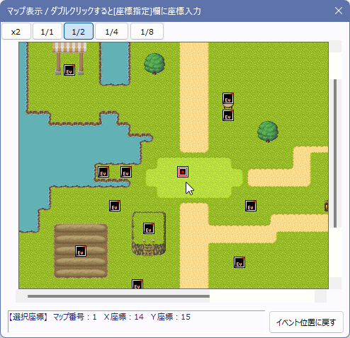

キャラクターの動作指定ウィンドウについて説明します。このウィンドウは、以下の2つの場合で表示されます。
・イベントエディタにて、移動ルートを「カスタム」にして「ルート」ボタンを押したとき
・イベントコマンド「その他1」にて、「■動作指定」ボタンを押したとき
【動作指定ウィンドウのコマンド操作】
Cキー：コピー
Xキー：切り取り
Vキー：貼り付け
Delキー：削除
コマンドをダブルクリック：コマンド内容の数値を読み込みます。「座標指定」のコマンドであればマップ表示もその位置に表示します。
【各部の説明】
１．動作指定する対象
どのイベント（またはプレイヤーキャラクター）を動作させるかを選択します。また、セルフ変数や通常変数で動作させるキャラの指定を行うことも可能です、変数はこのプルダウンリスト内の下の方にあります。
セルフ変数や通常変数で動作させるキャラを指定する際、変数の値とイベントの対応付けは以下のようになっています。
|
0以上の場合 ＝ その値のIDを持つイベント （例：2が入ってたらID2番のイベントに動作させる） -1＝このイベント -2＝主人公(隊列先頭) -3＝仲間1(2人目) -4＝仲間2(3人目) -5＝仲間3(4人目) -6＝仲間4(5人目) -7＝仲間5(6人目) |
２．動作内容
動作内容を表示する欄です。
３．動作を繰り返す / 移動できない場合は飛ばす
「動作を繰り返す」をオンにしていると、指定した動作を何度も繰り返します。
「移動できない場合は飛ばす」をオンにしていると、移動できない場合は動作を飛ばします。このチェックを外している場合、移動できない状況になると次の動作に移れず、ゲームが停まったままになる場合がありますのでご注意下さい。
４．移動コマンド
マップを移動させるときに使うコマンド群です。8方向のキーは各方向へ1歩移動するキーで、それ以外は書いてある通りです。
特殊なものだけ以下に補足しておきます。
・ジャンプ … キャラクターを右の欄で指定した距離だけジャンプさせます、距離を右0、下0にするとその場でジャンプします。左や上に移動させたい場合は右または下の欄にマイナスの値を入力してください。
・EvID[ ]のイベントに接近 … 指定したIDのイベントに一歩近付きます。8方向移動可能な場合は斜めにも移動しますが、4方向移動しか許可されていない場合は4方向のみで追跡します。なお、この欄には変数を指定することも可能です（例：2000000と入力すると通常変数0番の値のIDのイベントに接近する）。
【座標指定】 ※1マス単位で座標指定して動作を実行できます（精密座標では指定できません）
・X[ ] Y[ ]の位置に一歩移動 … 指定した位置に1歩近付きます。その他は「EvID[ ]のイベントに接近」と同様です。
・X[ ] Y[ ]の位置にジャンプ … 指定した位置までジャンプします。
・自動移動・短[単純(Ev)無視]… 指定した位置まで自動で移動します。最初に「マップ通行設定のみ(Evはないものとする)」で移動ルートを計算し、以後はルート通り進みます。
進路上に他のイベントや主人公がいた場合は止まります。20マス程度の短距離向け。処理の都合上、1×1マスの隙間がない場合は通行できないものとして扱われます。
→ プレイヤーやイベントが道を塞いで止まってしまっても問題ない状況向け。
・自動移動・短[スマート(小迂回)]… 最初に大局的な進行ルートを「マップ通行設定」のみで取得し、基本はその道に沿って移動しますが、もし他イベントや主人公が経路を塞いでいた場合は少し迂回して移動します。20マス程度の短距離向け。
→ それなりに賢く移動させたい場合はこれがおすすめです。負荷もほどほど。ただし「イベントでゴールまでの通路が塞がれている」場合は途中で止まってしまいます。
・自動移動[大負荷]… 大局的な進行ルートも「マップとイベント両方込み」の当たり判定で取得し、通行できない場合や低頻度で大局的なルートを再取得し直します。かなり遠くまでの経路も発見できますが負荷が高いです。
→ イベントが完全に道を塞いでいて、非常に遠回りせねばならない状況でも経路探索に成功する可能性があります。
ただし「ランダム移動するキャラがたまたま経路を塞いでいる」場合もそれに敏感に反応して大局的な進行ルートを変えてしまったり、「道がない」と判断して一時的に止まってしまったりする場合があります。
・自動移動・一歩のみ … このチェックをオンにしていると、自動移動を1歩行った時点で処理を終了します。「移動する主人公を追跡する」など、自動移動のゴール位置が逐次移動する場合はこのチェックをオンにして、毎歩、自動移動をし直すのがおすすめです。なお毎歩ルート計算をしなおすので処理負荷は大きくなります。
【自動移動を開始する条件】
●移動開始できるケース：開始地点～目標地点までの1×1通行可の連続経路が必要です。開始地点と目標地点の「通行判定が1x1すべて○」なら、目標地点上に「通行不能なイベント」がある場合でも移動開始します。もし目標地点にイベントがいる場合は、最後のイベントの手前で止まります。
●移動開始しないケース1(経路がない)：開始地点または目標地点の「マップ自体が通行判定が1/4マスでも×を含む」、または目標地点まで「マップ的に到達不能（道がない）」な場合は移動開始できません。たとえば開始地点や目標地点が「半マス通行不能」だと移動を開始しません。
●移動開始しないケース2(遠すぎる)：「回り道しなければならない量」が一定量を超えると移動が行われない場合があります。
→ ルート検索範囲は「移動先が遠い」ほど広くなるため、「座標上は2マス先にあるが、100歩以上回り道しないとたどり着けない場所」などには弱く、移動が行われないことが多いです。
※なお、「移動できない場合は飛ばす」がオンの場合は、自動移動で「移動開始できなかった場合」も「1歩でも完全に足を止められた場合」でも次のコマンドに移りますのでご注意ください。
５．方向転換コマンド
イベントを方向転換したいときに使うコマンド群です。補足説明が必要と思われるものだけ以下に記載します。
・右[左]に回転（45/90） … 右（または左）に1単位回転します。たとえば、8方向グラフィックの場合なら右に45度だけ回転しますが、4方向グラフィックの場合は右に90度回転します。
・左右ランダム回転 … これも上と同様、右か左に1単位回転します。
６．グラフィック変更/不透明度設定/高さ変更/効果音再生/ウェイト
上の数値入力欄に入れた値に応じた、各々の処理を行います。
この数値入力欄には変数も指定可能です（例：2000000と入れると通常変数0番の値で処理される）。
・グラフィック変更：あらかじめ、システムデータベースタイプ8に変更するキャラチップのファイルを設定しておかなければなりません。
・不透明度設定：キャラの不透明度を変更します。
・高さ変更：キャラの高さを「ピクセル単位」で変更します。高さ1以上にすると影の位置はそのままにキャラだけが浮きます。また、高さ1以上になっているキャラに対しては「下半身が半透明」チップが無効になります。
・効果音再生：システムデータベースのタイプ3にあらかじめ効果音の内容を設定しておかなければなりません。
・ウェイト：動作指定の次のコマンドまでウェイトされます。
７．変数の設定
動作指定中に変数の値を変化させたいときに使います。たとえば、移動が終わったら変数を変化させて自動イベントを起動するなどといったことが可能です。
８．速度・頻度の設定
移動速度・移動頻度・アニメ頻度をそれぞれ設定できます。この各々の意味は「イベントウィンドウ」を参照して下さい。
９．その他の設定
イベントのオプションを切り替えたり、半歩移動、全歩移動を切り替えたり、イベントのアニメパターンを切り替えたりするコマンド群です。
ON/OFF切り替えのオプションはマップイベント設定時のオプションに準じます、「イベントウィンドウ」を参照して下さい。
10． マップ表示ウィンドウを開く
マップイベントウィンドウから動作指定したとき、マップを見ながら「座標指定」の座標を設定できます。ダブルクリックすると「座標指定」に座標がセットされます。

【TIPS 「主人公」や「仲間」の半歩/全歩切り替え】
デフォルト状態で（「パーティ画像」コマンドの「シンクロ開始」を行わない状態で）動作指定で主人公や仲間の「半歩/全歩移動に設定」を切り替えると、隊列が乱れ、変な動きになってしまいます。
これは、各キャラの隊列移動が「X番目の仲間の動きは、主人公のY回前の移動方向を再現する」という処理が行われているため、仲間の側の「半歩/全歩」状態が切り替わると正確に隊列をトレースしなくなってしまうためです。
この挙動自体は仕様なので、主人公や仲間の半歩/全歩状態を切り替えるのはなるべく避けるようにしてください。
【TIPS 「並列実行」イベント内で「主人公」を動作指定させると、「プレイヤーからの接触」「イベントと接触」イベントを起動させることができる（※注意アリ）】
ちょっとした裏技ですが、「並列実行」イベントで「主人公」を「動作指定」で移動させると、「プレイヤーからの接触」起動のイベントや「イベントと接触」起動のイベントを起動させることができます。
でないとマウスクリックなどで自動移動などをさせたときに、これらのイベントが起動できないためです。
【注意！ 並列の動作指定で「プレイヤーからの接触」イベントに触れた場合だけ1フレームウェイトがかかります】
ただし、「並列実行」で主人公を移動させて「プレイヤーからの接触」イベントが起動された瞬間だけ、そのとき実行中の動作指定が1フレームだけ停止します。（Ver3.588時点）。
様々なイベント起動タイミングの整合性を取るためにそのような仕様になっています。
逃走シーンなどで移動速度がかすかに低下しますので、「あまりにもギリギリに時間調整されている」「マウスクリック自動移動が可能なゲーム」で「[プレイヤーからの接触]イベントが大量に配置されている」場合などはご注意ください。
また、以下の状況ではこのウェイトは起きません。
※通常移動時の、「方向キーによる移動」で「プレイヤーからの接触」イベントを起動させた場合は1フレームウェイトは起きません。
※「イベントと接触」イベントに触れた場合は、この1フレームウェイト現象は起きません。起きるのは「並列実行の動作指定」を使って主人公が「プレイヤーからの接触」イベントに触れた場合のみです。そのため、逃走シーンなどにおいて「プレイヤーからの接触」イベントのかわりに、接触した時点で「一時消去」される「イベントと接触」イベントを配置すれば移動時の速度低下は起きません。
「自動実行」イベントなどで主人公を動作させた場合は、「イベント実行中」はこれらの接触イベントに触れても起動させることはできません。
接触イベントの起動が可能なのは、あくまで「並列実行」イベント内での「動作指定」のみです。